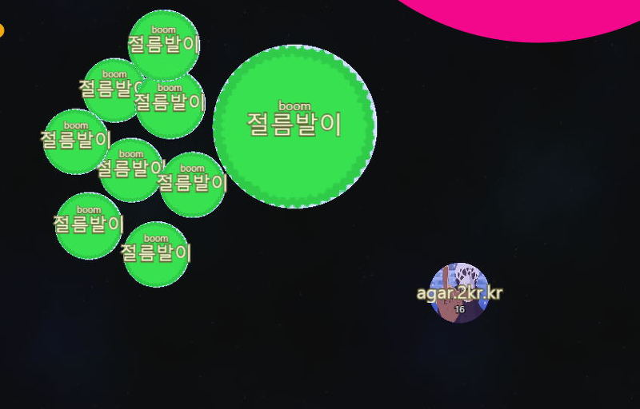
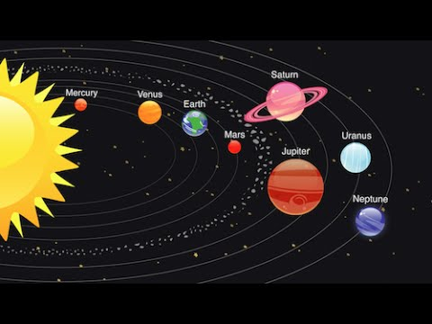

처음에는 조그마한 세포로 시작하여 덩치가 커다란 세포들을 피하며, 맵 구석구석에 기본적으로 깔려있는 먹이들을 먹으면서 몸집을 불려나가는 게임입니다. 기본적으로 자신보다 작은 세포는 잡아먹어서 몸집을 불릴 수 있고, 반대로 큰 세포에게 먹히면 게임오버가 되는 형식입니다.

현재는 agar.io에서 서비스 중인 나름 실시간 온라인 게임이기 때문에 다인용 게임입니다.
저는 1인용 게임으로 코딩해볼 예정입니다.

1. 세계관 : 태양계에서 4번째로 작은 행성인 지구, 그의 위성인 달은 태양이 부러웠고, 주변에 보이는 자그마한 별들을 먹으며 크기를 점점 키워나갑니다. 언젠가 태양을 제끼고 태양계의 주인이 달 자신이 될 수 있도록 다른 행성의 눈을 피해서 몸집을 불려나가야합니다.
2. 게임 방법: 마우스의 x,y 좌표값을 따라서 달이 이동하며 주변에 작게 빛나는 별(먹이)를 먹으며 조금씩 조금씩 크기를 키워나가다가 큰 행성들의 견제를 피하며 몸집을 불리는 게임입니다.
태양계의 행성 크기대로 수성, 화성, 금성, 지구, 해왕성, 천왕성, 토성, 목성을 차례로 제낀 후에(마지막 목성을 먹으면 태양보다 커짐) 태양을 맛있게 먹으면 게임이 끝납니다.